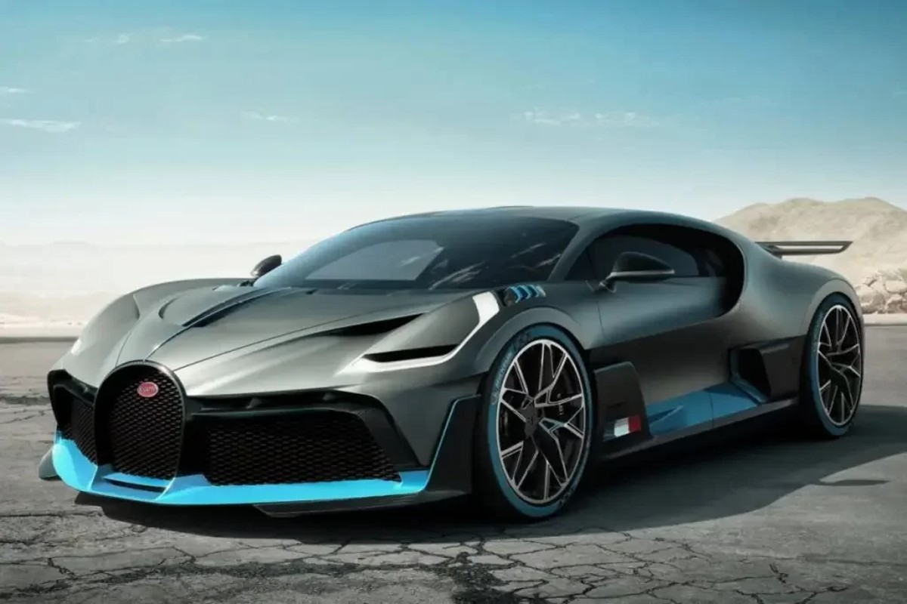
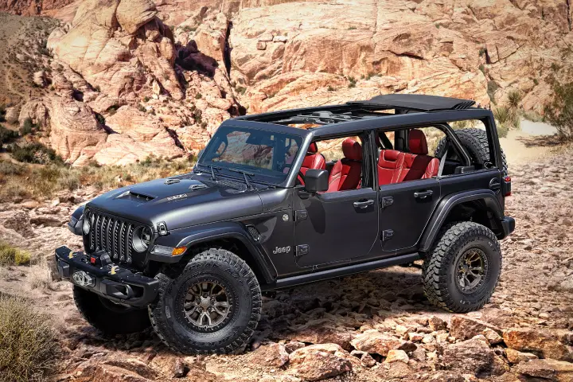
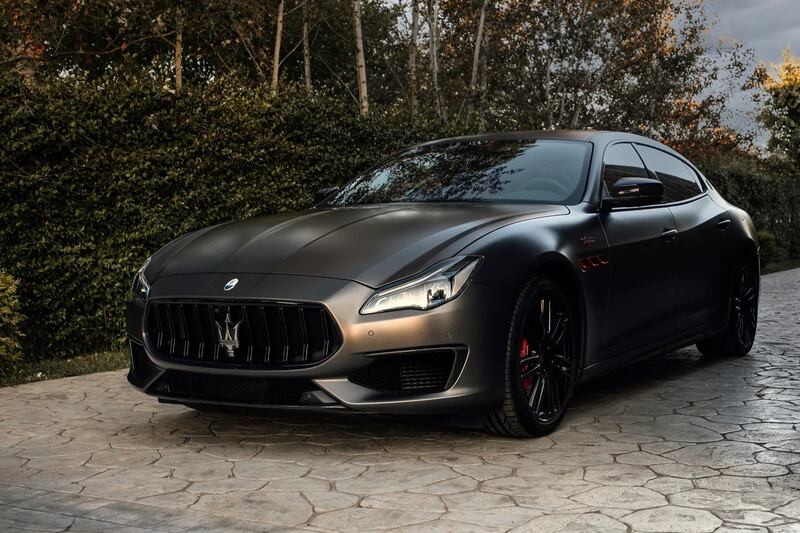
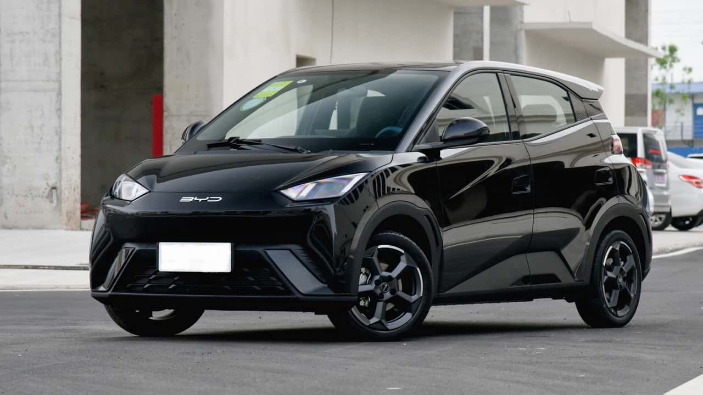

Escolher um carro vai muito além da estética é sobre estilo de vida, necessidades e até personalidade.
O universo automotivo é vasto e cada categoria foi pensada para oferecer experiências únicas ao volante.
A seguir, explore diferentes tipos de veículos e descubra como cada um atende a perfis e propósitos específicos.
Esportivos
Onde a engenharia encontra a adrenalina. Esta seção é dedicada aos veículos projetados para máxima performance em pistas e estradas.

Off-Road
Para quem não conhece limites geográficos. Explore máquinas construídas para dominar lama, rochas e areia com tração total.

Luxo
O ápice do conforto e status. Conheça os carros onde cada detalhe é feito à mão e a tecnologia serve ao bem-estar do passageiro.

Eletricos
A mobilidade do amanhã. Descubra como o torque instantâneo e a emissão zero estão redefinindo a indústria automotiva.
